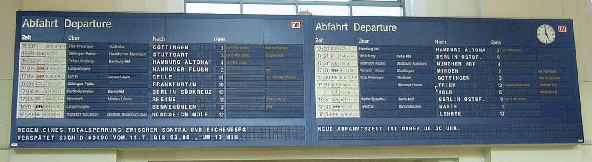
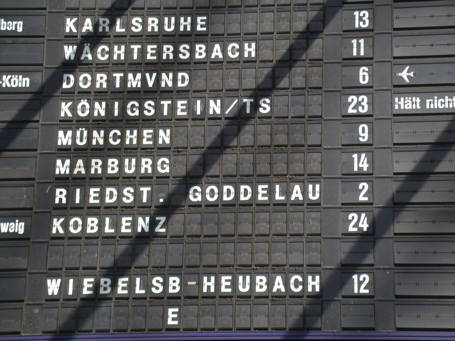

1976
Solari di Udine (Italy)
Solari Split-Flap Display
A public sign that speaks in a visible clatter of flipping cards, holding its message with zero power

Overview
Deep dive
Team & pioneers
- Solari di Udine. Italian maker of the Teleindicatore split-flap display modules and the Cifra flip clock.
Media
